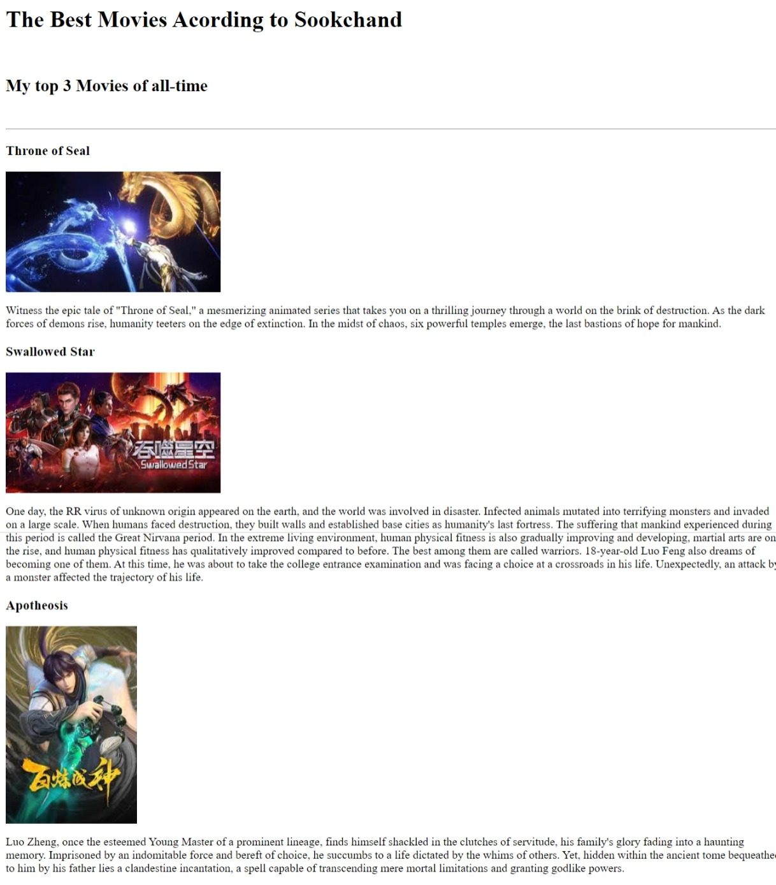
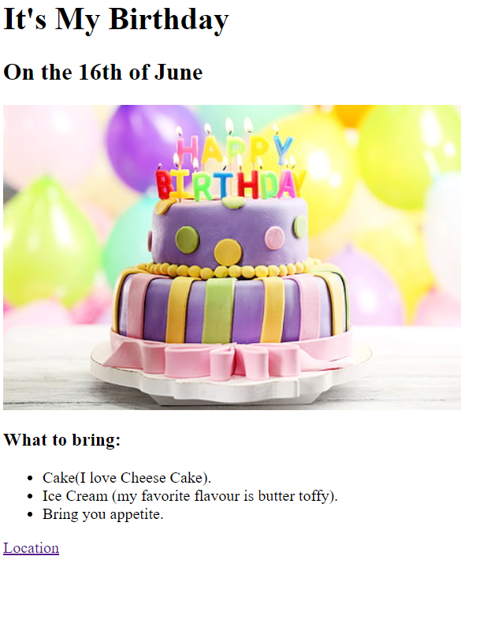

Sookchand Harripersad: A Glimpse into My Professional World
Your Full Stack Developer with a Specialization in Artificial Intelligence


Future Development
- AI Consultancy: I can provide expert advice to businesses on how to integrate AI into their operations.
This could involve everything from strategic planning to implementation of AI technologies.
- Custom Chatbot Development: Businesses are increasingly using chatbots for customer service, sales, and marketing.
I would offer my services to build custom chatbots using AI platforms.
- AI Application development: There’s a growing demand for applications powered by AI.
I could develop custom AI applications tailored to specific business needs.
- API Integration: Many businesses use existing AI applications and may need help integrating these into their existing systems.
- AI Training: With the growing interest in AI, there’s a demand for professionals who can provide training in various AI technologies.
At Versatile AI Creations we will be there to fill this gap.
- AI-Powered Skin Analysis Tool: VersatileAI Creations in the near future will utilizing algorithms to examine skin images, providing insights into potential skin issues, aging signs, hydration levels, and more, all from a smartphone snapshot.
- Content Management System (CMS) for Skincare App: VersatileAI Creations will be creating a content management system (CMS) for populating the software with educational content and beauty products.
Remember, our business "VersatileAI Creations" are capable of creating versatile AI solutions.
So, don't limit yourself speak to us. Explore and innovate according to the needs of your target market and the success of your business. 😊